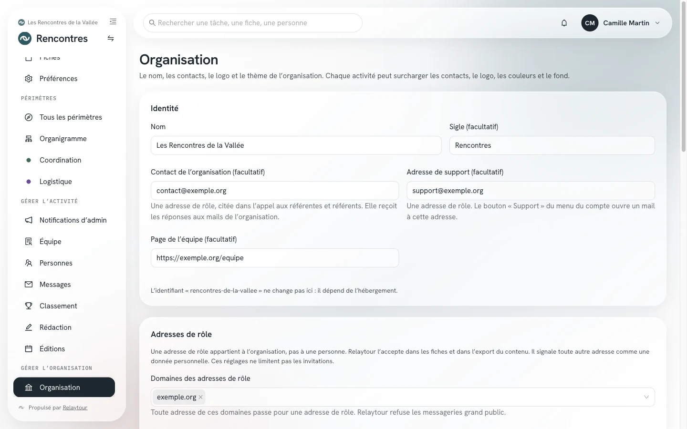
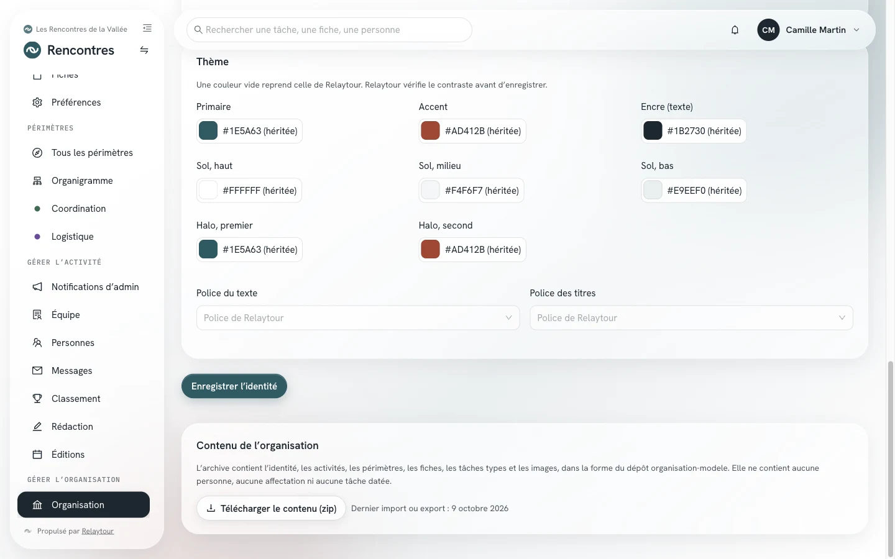
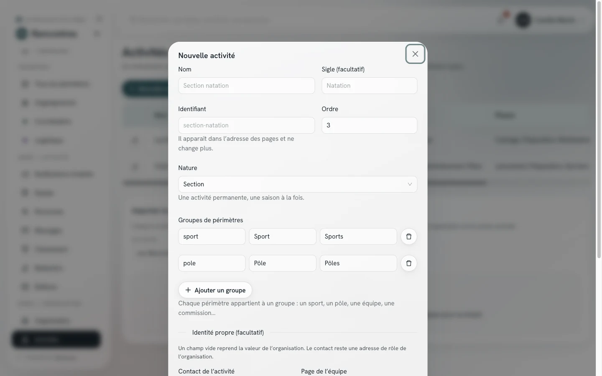
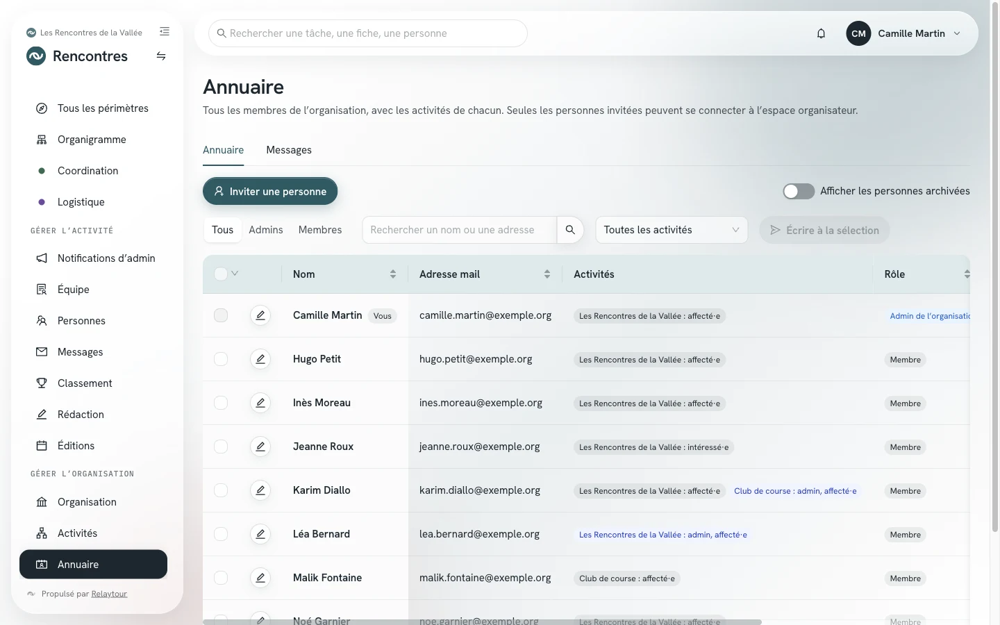
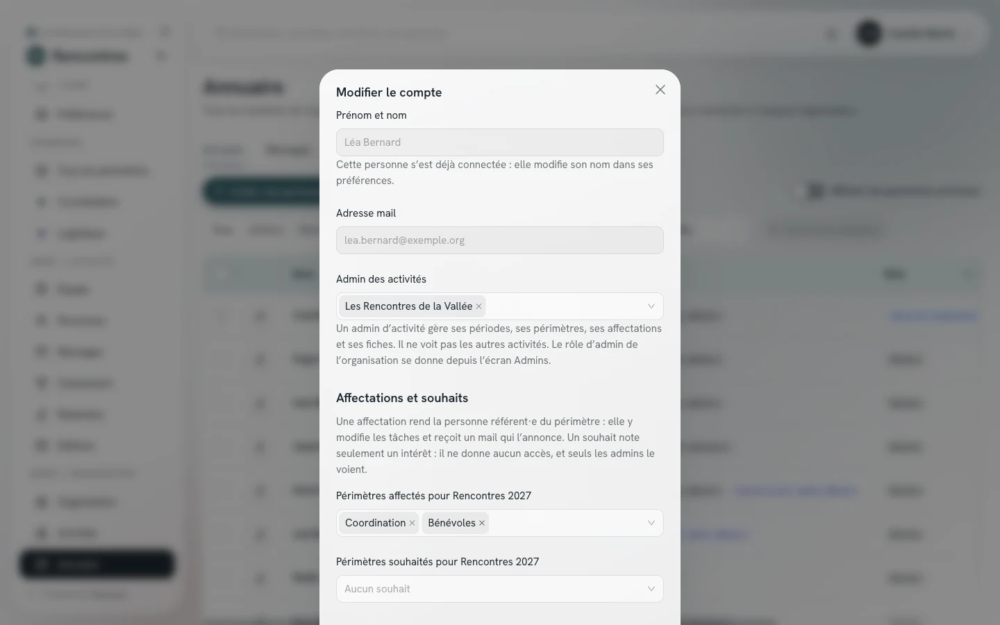
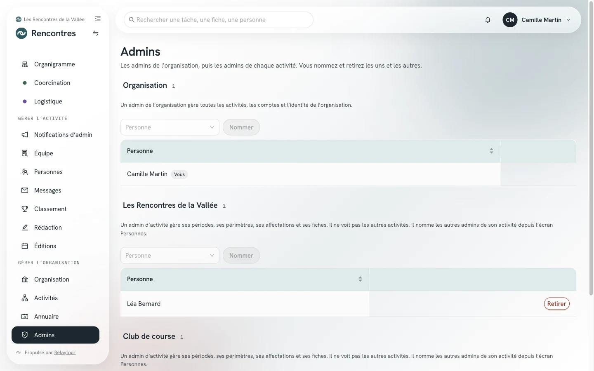
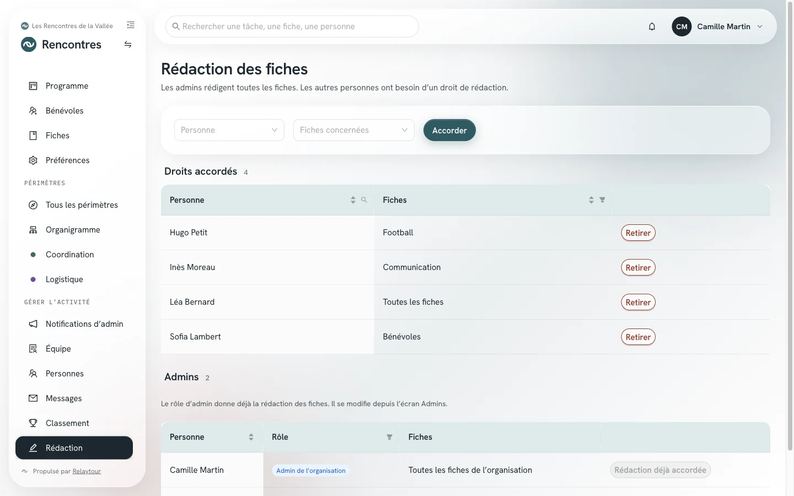
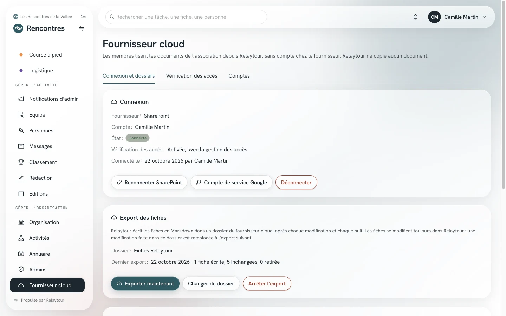
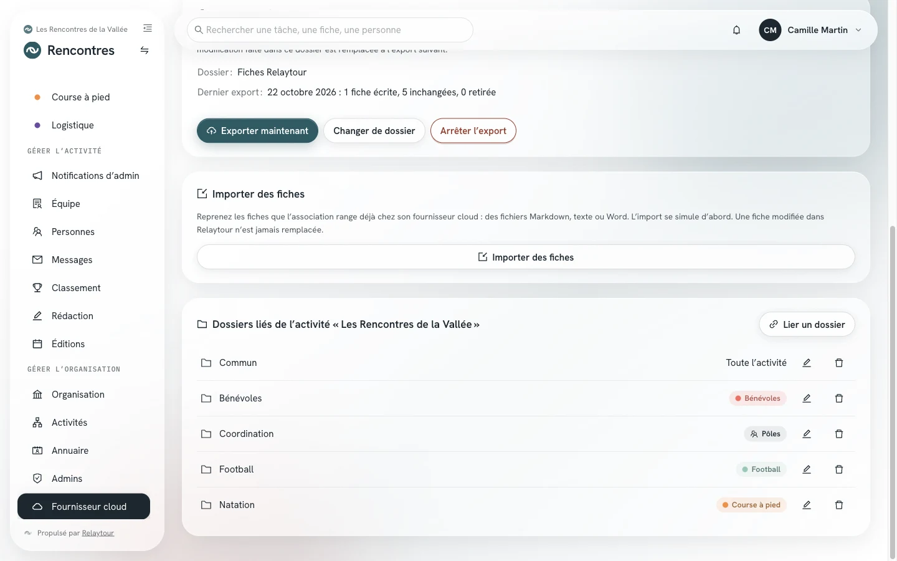

Vous gérez ce qui dépasse une activité : l'identité de l'organisation, la liste des activités, les comptes et les rôles. C'est le niveau du bureau. Vous administrez aussi toutes les activités, sans avoir besoin d'y être nommé·e.
Ce mode d'emploi ne décrit que les fonctions propres à ce rôle. Le pilotage courant d'une activité (périodes, périmètres, affectations, avancement) figure dans le mode d'emploi de l'admin d'activité.
Point de départ
Où se trouvent vos écrans
Le groupe Gérer l'organisation du menu se trouve sous le groupe « Gérer l'activité ». Il porte cinq entrées : Organisation, Activités, Annuaire, Admins et Fournisseur cloud. Les entrées Organisation, Annuaire, Admins et Fournisseur cloud n'apparaissent que pour votre rôle. Le mode d'emploi de l'admin d'activité décrit l'écran « Notifications d'admin ». Pour vous, il place en tête un groupe « Organisation ». Ce groupe annonce les archivages et les nominations d'admins faits par un autre admin de l'organisation. Une activité sans admin vous envoie aussi ses notifications d'admin. Vos autres leviers se trouvent sur les pages Activités et Rédaction, sous forme de champs et de boutons que les admins d'activité ne voient pas.
Les tableaux de l'annuaire et des admins se trient, se filtrent et se redimensionnent comme ceux des activités. Le mode d'emploi de l'admin d'activité le décrit dans « Où se trouvent vos écrans ».
Vos écrans
Ce que vous seul·e pouvez faire
Identité de l'organisation
/<activité>/admin/organisation
La page réunit le nom, les contacts, le logo et le thème de l'organisation. Chaque activité peut ensuite surcharger les contacts, le logo et les couleurs pour elle-même.
IdentitéLe nom, le sigle, le contact de l'organisation, l'adresse de support et la page de l'équipe. Le contact reçoit les réponses aux mails. L'adresse de support est une adresse de rôle : l'entrée « Support » du menu du compte ouvre un mail à cette adresse.
Adresses de rôleLes domaines admis pour les adresses citées dans les fiches, et les boîtes partagées hébergées chez une messagerie grand public.
Logo et faviconLe logo PNG, sa variante SVG et le favicon.
ThèmeLes couleurs et les deux polices. Relaytour vérifie le contraste avant d'enregistrer, et une couleur laissée vide reprend celle de Relaytour.

Page Organisation, sur l'organisation d'exemple livrée avec Relaytour.
Contenu de l'organisation
/<activité>/admin/organisation
L'application est la source de vérité du contenu. Le panneau situé en bas de la page Organisation indique la date du dernier import ou export, et signale si des admins ont modifié le contenu depuis.
Télécharger le contenu (zip)Récupérer l'identité, les activités, les périmètres, les fiches et les tâches types dans une archive.
L'archive ne contient aucune personne, aucune affectation ni aucune tâche datée. Téléchargez-la avant tout import : un import refuse d'écraser des modifications plus récentes.

Le panneau Contenu de l'organisation, sur l'organisation d'exemple.
Créer et archiver une activité
/<activité>/admin/activites
Vous voyez toutes les activités de l'organisation, y compris celles que vous n'administrez pas nommément. Deux commandes vous sont réservées.
Nouvelle activitéCréer un événement, une section ou une instance, avec son identifiant, sa nature et ses groupes de périmètres.
ArchivéeArchiver une activité terminée. Elle disparaît du sélecteur et reste consultable.
L'identifiant apparaît dans l'adresse des pages et ne change plus après la création.

Création d'une activité, sur l'organisation d'exemple.
Annuaire et comptes
/<activité>/admin/annuaire
Un compte est commun à toute l'organisation, et une même personne peut appartenir à plusieurs organisations. Vous seul·e touchez au compte lui-même et aux rôles. Vous seul·e lisez l'annuaire complet, dans le groupe « Gérer l'organisation » : la colonne « Activités » indique où chaque personne participe. Des filtres séparent les admins et les membres, isolent une activité, ou ne gardent que les membres « Sans activité ». L'écran « Personnes » d'une activité ne montre que son équipe. Dans l'écran « Équipe », la liste d'affectation vous propose aussi les membres des autres activités, suivis du nom de leurs activités.

Annuaire de l'organisation, sur l'organisation d'exemple. Les personnes et les adresses sont fictives.
Inviter une personneCréer un compte, choisir les activités que la personne administre et ses périmètres, affectés ou souhaités. Une adresse qui a déjà un compte hors de votre organisation reçoit une invitation, listée dans l'encadré « Invitations en attente » : la personne l'accepte ou la refuse depuis son compte, et rien n'est créé en son nom avant son accord. L'invitation ne garde pas le rôle d'admin d'activité : vous nommez la personne après son accord.
Modifier le compteOuvrir la fenêtre d'un compte par le crayon de sa ligne, ou par un clic sur la ligne. Vous y réglez les activités que la personne administre, ses périmètres affectés et ses périmètres souhaités, dans chaque activité.
Prénom et nomCorriger le nom d'une personne tant qu'elle ne s'est jamais connectée. Après sa première connexion, la personne modifie elle-même son nom dans ses préférences.
ArchiverFermer l'accès d'une personne qui quitte votre organisation. Elle garde son compte, et son historique reste conservé.
RestaurerRouvrir l'accès d'une personne archivée. L'interrupteur « Afficher les personnes archivées » les fait apparaître dans le tableau.
ÉcrirePréparer un message pour un membre, ou pour les membres cochés avec « Écrire à la sélection ». Le message part de votre propre messagerie. L'onglet « Messages » liste tous les messages de l'organisation, ceux des activités compris.
Un message de l'annuaire s'adresse à des membres de l'organisation, quelle que soit leur activité. Le mode d'emploi de l'admin d'activité décrit la fenêtre d'écriture dans « Messages à votre équipe ».

Modification d'un compte, sur l'organisation d'exemple. La personne est fictive.
Admins
/<activité>/admin/admins
L'écran liste les admins de l'organisation, puis les admins de chaque activité. Vous nommez et vous retirez les uns et les autres.
NommerChoisir une personne dans la liste d'un bloc, puis la nommer admin de l'organisation ou admin de cette activité.
RetirerRetirer le rôle d'une personne, après confirmation. Vous ne pouvez pas vous retirer vous-même le rôle d'admin de l'organisation.

Écran Admins, sur l'organisation d'exemple. Les personnes sont fictives.
Un admin d'activité ne voit ni les autres activités, ni leurs personnes. Il nomme les autres admins de son activité depuis l'écran « Personnes ».
Le mail d'invitation contient le lien vers le mode d'emploi du rôle de la personne. Après une nomination, renvoyez l'invitation depuis l'annuaire pour lui transmettre le mode d'emploi de son nouveau rôle.
Droit sur toutes les fiches
/<activité>/admin/redaction
Vous voyez tous les droits de rédaction de l'organisation, et vous disposez d'une option supplémentaire dans la liste des fiches concernées.
Toutes les fiches, communes comprisesConfier la rédaction des fiches communes à une personne, par exemple la coordination.
Un admin d'activité n'accorde un droit que sur les périmètres de son activité.

Écran Rédaction des fiches, sur l'organisation d'exemple.
Fournisseur cloud
/<activité>/admin/espace-fichiers
Le fournisseur cloud est le service en ligne où l'association range ses documents : SharePoint, Google Drive, Dropbox ou Nextcloud. Vous le connectez avec votre propre compte. Les membres lisent ensuite ses documents dans Relaytour, sans compte chez le fournisseur. Relaytour ne copie aucun document : il le lit chez le fournisseur à chaque ouverture.
La personne qui exploite le serveur choisit les fournisseurs proposés. Si elle n'en a ouvert aucun, la page l'indique et ne propose aucune connexion.
ConnecterOuvrir la page de connexion du fournisseur, puis revenir dans Relaytour. Un Nextcloud se désigne par son adresse. Une seule connexion existe par organisation.
Compte de service GoogleConnecter Google Drive par un compte technique de l'association, dont vous déposez la clé. Ce compte n'exporte les fiches que dans un Drive partagé.
ReconnecterDéconnecterRenouveler l'accès, ou le fermer. Après une déconnexion, les dossiers liés restent, mais les membres ne lisent plus leurs documents et l'export s'arrête.

Page Fournisseur cloud, sur l'organisation d'exemple. Un dossier local tient lieu de fournisseur.
Un dossier lié rend un dossier du fournisseur lisible dans une activité. Vous choisissez ses lecteurs : toute l'activité, ou une liste de périmètres et de groupes. Un groupe, comme les sports ou les pôles, vaut aussi pour les périmètres qui le rejoindront. Un dossier lié se lit comme les fiches de ces périmètres, ou comme les fiches communes.
Lier un dossierParcourir les dossiers du fournisseur, ouvrir le dossier à lier, puis choisir ses lecteurs. Une bibliothèque entière ne se lie pas, et un dossier se lie une seule fois par activité.
ModifierChanger les lecteurs d'un dossier lié ou son nom affiché, sans le retirer. La fenêtre annonce les documents liés que les lecteurs de leur fiche ne liraient plus : leur fiche les masque tant que le dossier ne la sert pas.
Étendre le dossier liéOuvrir ce documentDepuis une fiche qui concerne aussi d'autres périmètres, le bouton d'alerte d'un document lié propose deux réponses. La première ajoute les périmètres et les groupes de la fiche aux lecteurs du dossier. La seconde ouvre ce seul document à toutes les personnes qui lisent la fiche, sans ouvrir le reste du dossier ; « Réserver de nouveau » la retire.
RetirerRetirer un dossier de l'activité. Le dossier reste chez le fournisseur, et les fiches ne citent plus ses documents.

Les dossiers liés d'une activité, sur l'organisation d'exemple.
Relaytour peut aussi écrire les fiches chez le fournisseur, en Markdown, et reprendre les fiches que l'association y range déjà.
Choisir le dossier d'exportIndiquer où Relaytour crée le dossier « Fiches Relaytour ». Relaytour y écrit chaque fiche une minute après sa modification, puis chaque nuit.
Exporter maintenantArrêter l'exportLancer un export sans attendre, ou ne plus écrire dans le dossier. Le résultat du dernier export s'affiche dans le panneau.
Importer des fichesChoisir un dossier source par périmètre, puis lire la simulation avant d'importer. Les fichiers Markdown et texte entrent tels quels, et les documents Word sont convertis en Markdown.
Les fiches se modifient toujours dans Relaytour. Une modification faite à la main dans « Fiches Relaytour » est remplacée à l'export suivant. Une fiche qui contient une coordonnée personnelle n'est ni exportée ni importée. Un import ne remplace jamais une fiche modifiée dans Relaytour.
Une fois le fournisseur connecté, la page porte trois onglets : « Connexion et dossiers », « Vérification des accès » et « Comptes ». La vérification compare les équipes aux droits des dossiers liés chez le fournisseur. Elle lit l'annuaire et les groupes du fournisseur, et ne change aucun droit. Avec SharePoint, un admin Microsoft Entra accepte d'abord deux autorisations de plus.
Activer la vérification des accèsReconnecter le fournisseur avec la lecture de l'annuaire. Une organisation qui ne l'active pas garde la connexion d'origine.
Vérifier maintenantComparer, pour chaque dossier lié de l'activité, les personnes attendues à ses droits. Chaque personne apparaît sous son équipe : « A accès » avec la voie (directement, par un groupe, par toute l'organisation), « Sans compte », « Sans accès » ou « Inconnu » quand un groupe ne se lit pas. Le bloc « Accès en trop » nomme les comptes qui ont un droit sans être attendus. Relaytour vérifie aussi chaque nuit.
Attendus chez le fournisseurDans la fenêtre « Modifier » d'un dossier lié, choisir tous les membres des périmètres lecteurs, ou leurs contacts principaux seulement.
Gérer les accèsChoisir, pour un dossier lié, ce que Relaytour propose : vérifier seulement, partager le dossier en lecture ou en écriture, ou faire entrer les personnes dans un groupe du fournisseur qui a déjà un droit sur le dossier. La gestion demande une reconnexion, et une autorisation de plus chez Microsoft.
AppliquerÉcarterTout appliquerLes propositions d'un dossier ajoutent les personnes attendues sans accès, et retirent les accès que Relaytour a créés pour des personnes qui ne sont plus attendues. Un accès posé à la main n'est jamais retiré. Une proposition écartée ne revient pas tant que la situation de la personne ne change pas. Un réglage applique les ajouts sans attendre ; un retrait attend toujours un admin.
ComptesLire, pour chaque membre, si son compte est trouvé, invité ou absent de l'annuaire, et saisir l'adresse de son compte quand elle diffère de son adresse Relaytour.
Le dossier « Fiches Relaytour » ne se lie pas à une activité. Un changement de fournisseur efface le dossier d'export de l'ancien fournisseur.
Bon à savoir
Quatre points de vigilance
Exporter avant d'importer
Les modifications faites dans l'application priment sur le dossier de contenu. Téléchargez l'archive avant toute réimportation, sinon l'import s'arrête pour protéger votre travail.
Un compte, plusieurs organisations
Une personne garde un seul compte pour toutes ses organisations. L'archivage ne vaut que dans votre organisation : il ne change rien ailleurs, et une autre organisation n'en est pas informée. Le nom appartient à la personne, qui le modifie dans ses préférences.
Les adresses de rôle protègent les personnes
Relaytour refuse les coordonnées personnelles dans les fiches. N'ouvrez les domaines admis qu'à des boîtes partagées de l'organisation.
La visibilité reste cloisonnée
Une personne voit une activité si elle l'administre ou si elle y est affectée. Nommer un admin d'activité ne lui ouvre rien d'autre : il lit l'équipe de son activité, pas l'annuaire de l'organisation.
Hors de l'espace organisateur
La création de l'organisation, ses limites, sa suspension et l'export complet de ses données appartiennent à la personne qui exploite le serveur. Ces actions passent par des scripts d'administration, pas par cet écran.
Les autres rôles
Les autres modes d'emploi
Vous administrez aussi chaque activité, et vous utilisez les écrans communs à toutes les personnes. Ces deux modes d'emploi complètent celui-ci.